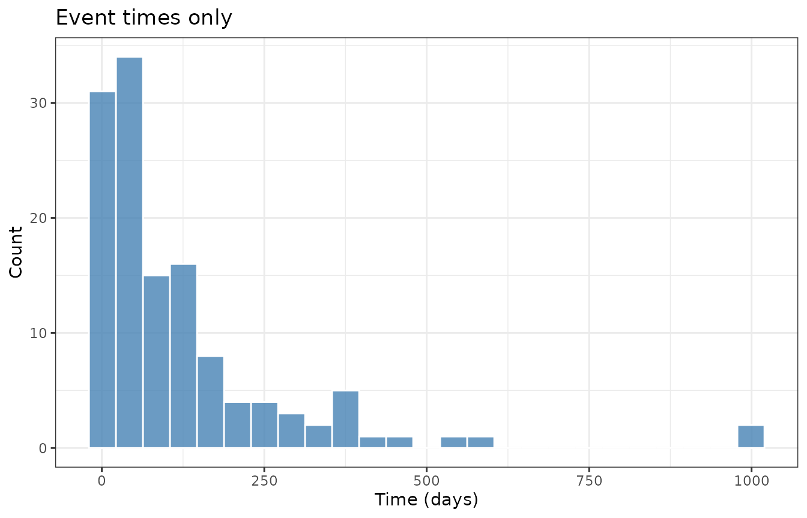
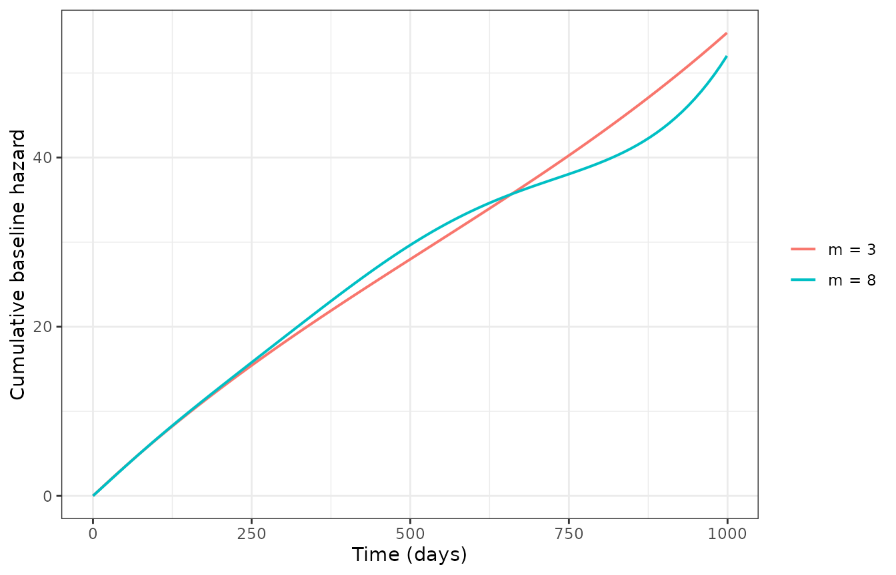
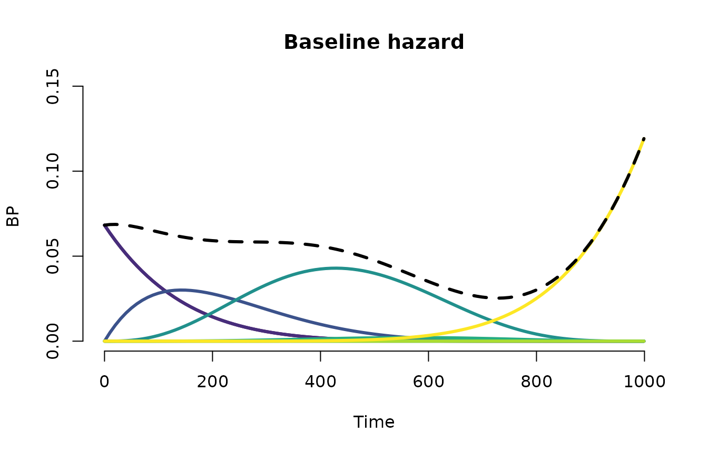
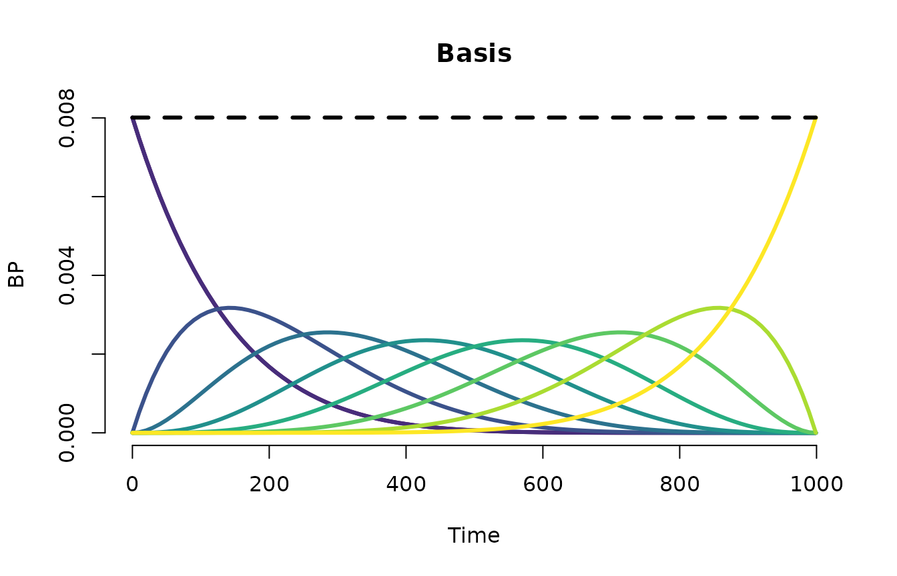

The unknown baseline is approximated by a Bernstein
polynomial of degree m. The vector
bp.param holds the m baseline coefficients
(gamma).
Before you model
ggplot(subset(veteran, status == 1), aes(x = time)) +
geom_histogram(bins = 25, fill = "steelblue", color = "white", alpha = 0.8) +
labs(x = "Time (days)", y = "Count", title = "Event times only") +
theme_bw()
Distribution of observed event times.
The support of event times motivates the upper limit tau
used in Bernstein basis evaluation (max(time) by
default).
Fit and summarize
fit_low <- bpph(
Surv(time, status) ~ karno,
degree = 3,
data = veteran,
approach = "mle",
init = 0
)
fit_high <- bpph(
Surv(time, status) ~ karno,
degree = 8,
data = veteran,
approach = "mle",
init = 0
)
c(low = length(fit_low$bp.param), high = length(fit_high$bp.param))
#> low high
#> 3 8
AIC(fit_low, fit_high)
#> fit model degree aic npars
#> 1 model1 ph 3 1458.842 4
#> 2 model2 ph 8 1465.575 9Visual check — baseline overlay
times <- seq(0, max(veteran$time), length.out = 100)
tau <- max(veteran$time)
baseline_curve <- function(fit, times, tau) {
bb <- bp.basis(times, degree = length(fit$bp.param), tau = tau)
data.frame(
time = times,
cumhaz = as.vector(bb$G %*% fit$bp.param),
degree = paste0("m = ", length(fit$bp.param))
)
}
bl_df <- rbind(
baseline_curve(fit_low, times, tau),
baseline_curve(fit_high, times, tau)
)
ggplot(bl_df, aes(x = time, y = cumhaz, color = degree)) +
geom_line(linewidth = 0.7) +
labs(x = "Time (days)", y = "Cumulative baseline hazard", color = NULL) +
theme_bw()
Cumulative baseline hazard: degree 3 vs degree 8.
plot(fit_high, graph = "baseline", cumulative = FALSE)
Estimated baseline hazard components (degree 8).
plot(fit_high, graph = "basis", cumulative = FALSE)
Bernstein basis functions on [0, tau].
Gamma information stability
kappa_tbl <- data.frame(
degree = c(3, 8),
gamma_information_stable = c(
attr(vcov(fit_low, bp.param = TRUE), "gamma_information_stable"),
attr(vcov(fit_high, bp.param = TRUE), "gamma_information_stable")
),
kappa_gamma = c(
signif(attr(vcov(fit_low, bp.param = TRUE), "gamma_information_kappa"), 4),
signif(attr(vcov(fit_high, bp.param = TRUE), "gamma_information_kappa"), 4)
)
)
kappa_tbl
#> degree gamma_information_stable kappa_gamma
#> 1 3 TRUE 1.460e+02
#> 2 8 FALSE 8.236e+10